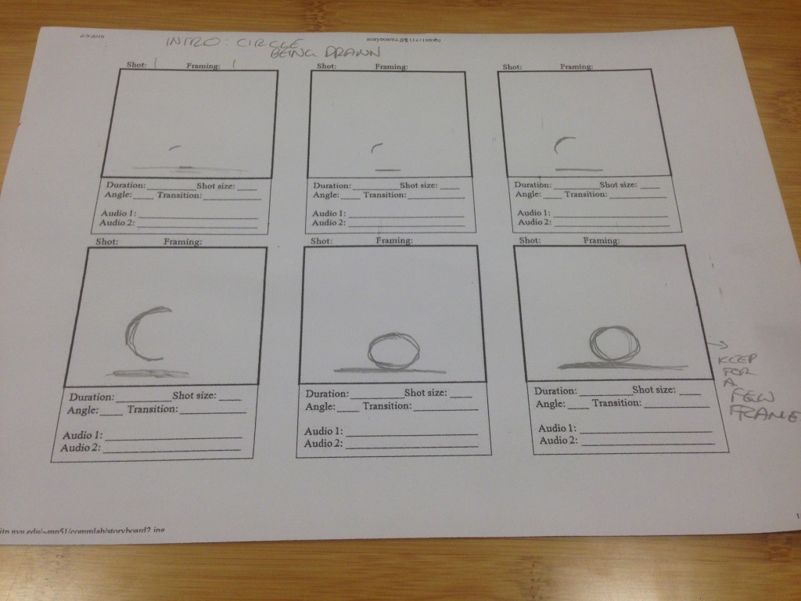
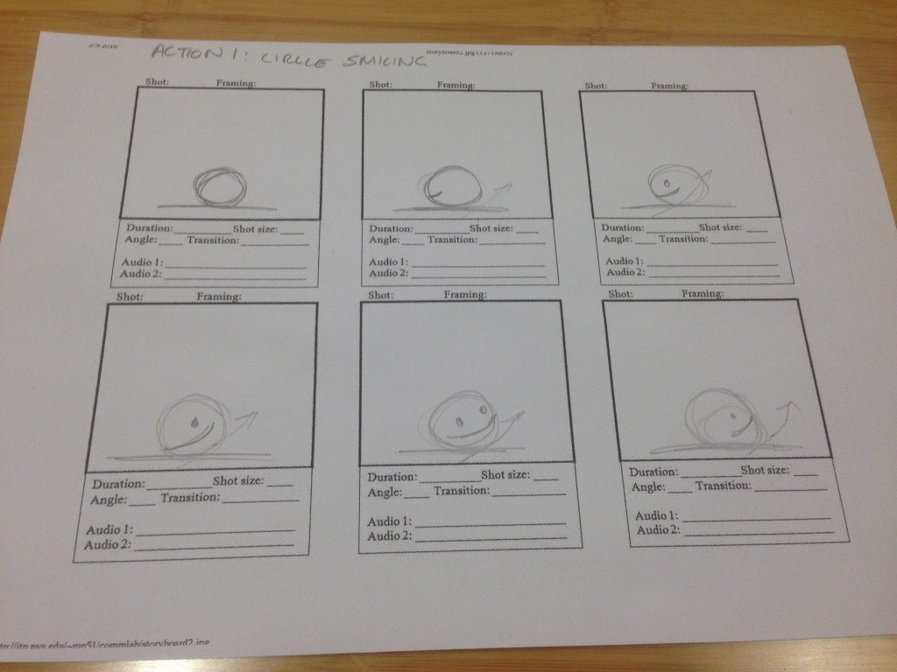
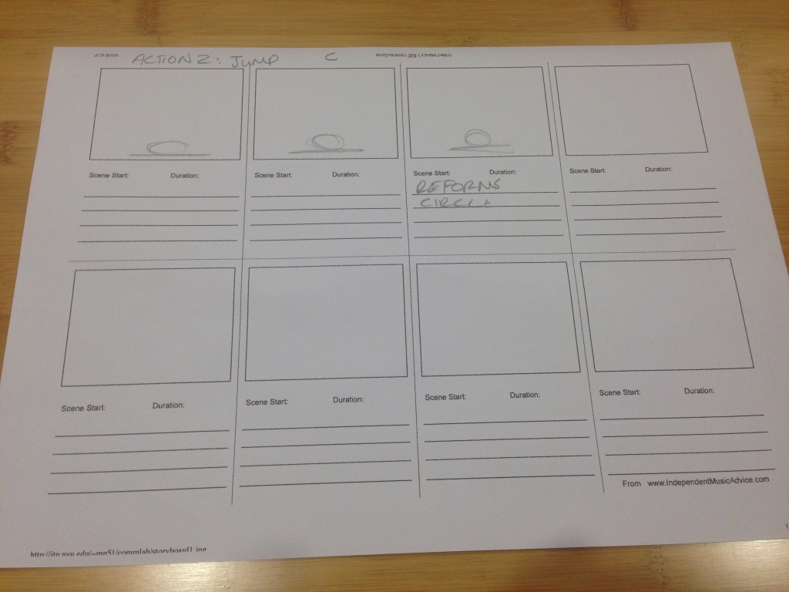
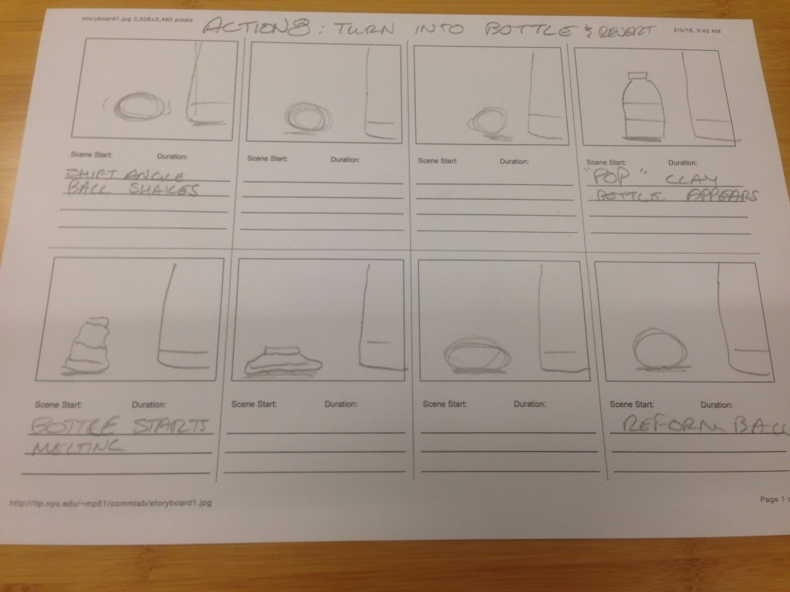
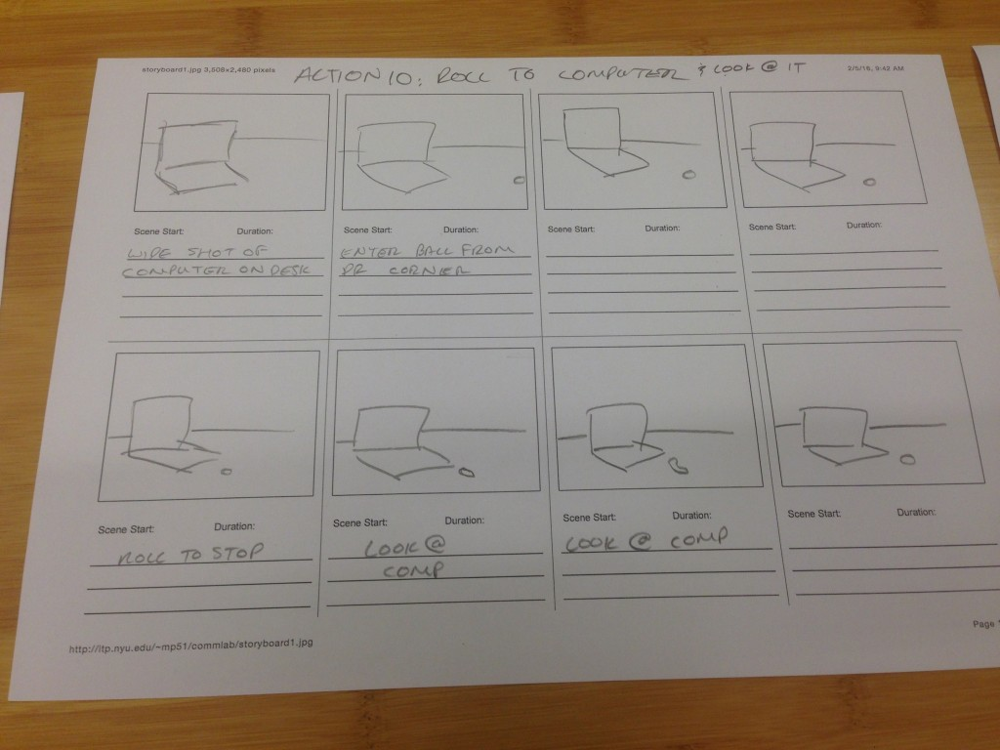
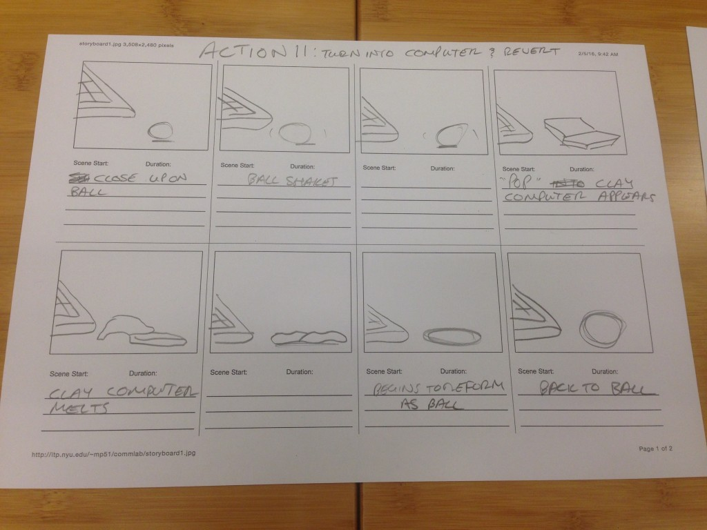
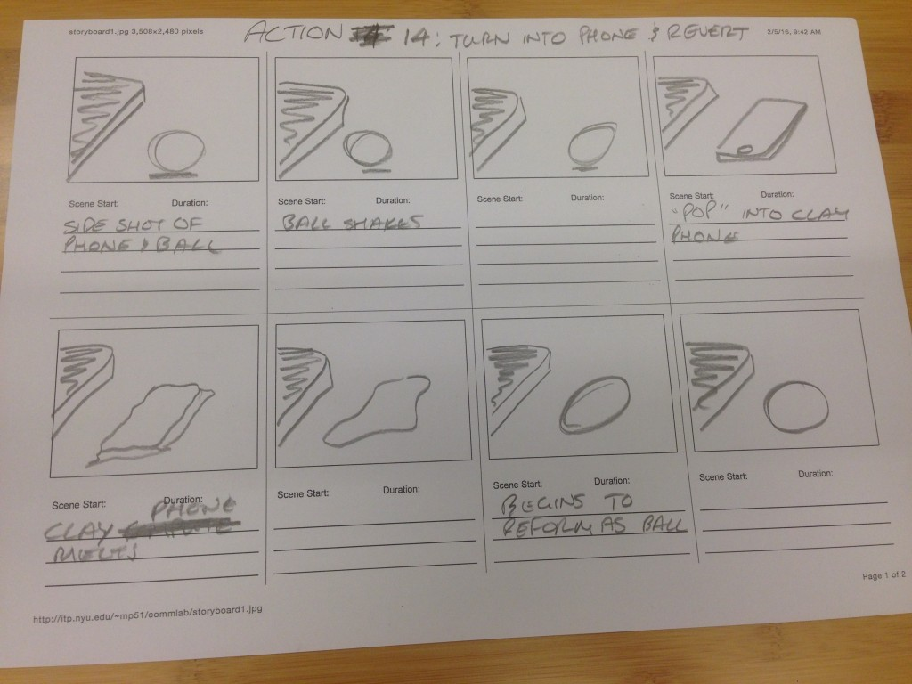

Life is Pointless
Ever felt like you don't really know how to fit in?
Stop-motion is very meticulous business. While traditional animation can give you all the control in the world, being able to backtrack and erase at a whim, stop-motion, especially amateur stop-motion, can give you variables that you have no control of. Continuity is key, and sometimes people will bump things out of place or a model will smudge and droop in a way that renders it unrecoverable. But nonetheless you have to keep forging on! Keep your tripod tight, your batteries charged, your models at the ready, the lighting consistent, the white balance... balanced? And you should be good! Maybe not Wallace and Gromit or Wes Anderson professional levels of good, but good enough!
a little more detail...
When making this we wanted to create a story about a little ball on a journey of identity and finding a sense of self. It was pretty straight forward, with our little buddy making pit stops on his life journey to try out different things, such as being a water bottle, laptop, or phone, and then it culminates with him finding out that maybe being a human is what he wants to be. Of course, that isn't the finale in this case, you have to watch the video to find out! I've spoiled enough already!
Reflecting back on this work, I can relate a lot to the character that Nick and I created. As an Asian-American I've always felt a little out of place in the cultures that I call my own. I'm too Filipino for the United States and too American for the Philippines, resulting in my status as a third-culture kid. Maybe finding your own identity might be a wasted effort? I guess I am still on the same journey that our little ball boy went on.
A little bit of behind the scenes with the storyboard:
      